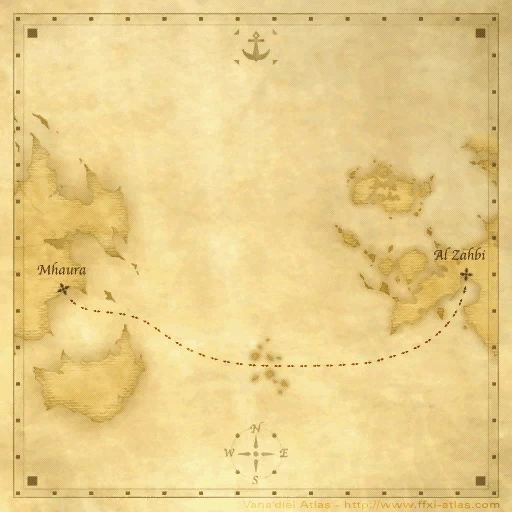

Description
Open sea route to Al Zahbi is an outdoor area in Ferries.
Map

NPCs
| Name | Location | Type |
|---|---|---|
| Adeben | — | Ferry Captain |
| Cehn Teyohngo | — | Guild Merchant |
Notorious Monsters
| Name | Level | Drops | Steal | Family | Spawns | Notes |
|---|---|---|---|---|---|---|
| Gugru Orobon | 63 | Orobon Lure | — |  OrobonImage source OrobonImage source | 1 | Fished up; A |
| Southern Piranu | 78-80 | Orobon Lure Spagyric Nails Kugui | — | OrobonImage source | 1 | Fished up; A |
Regular Monsters
| Name | Level | Drops | Steal | Family | Spawns | Notes |
|---|---|---|---|---|---|---|
| Blanched Kraken | 44-46 | Seashell | — |  Sea MonksImage source Sea MonksImage source | — | Fished up; A, H |
| Gugru Crab | 33-35 | Crab Shell Land Crab Meat White Sand | — |  CrabsImage source CrabsImage source | 1 | H |
| Gugru Jagil | 36 | — | — |  PugilsImage source PugilsImage source | — | — |
| Ocean Jagil | 30-35 | Pugil Scales Shall Shell | Fish Scales | PugilsImage source | — | A, H |
| Ocean Kraken | 41-43 | Seashell Shall Shell | — | Sea MonksImage source | — | A, H |
| Passage Crab | 35 | Rock Salt | Rock Salt | CrabsImage source | 1 | Fished up; A, H |
| Revenant | 37-41 | — | — |  GhostsImage source GhostsImage source | — | A, H, HP |
 Thunder ElementalImage source Thunder ElementalImage source | — | — | — | Elementals | — | During lightning weather; A, M |
 Water ElementalImage source Water ElementalImage source | — | — | — | Elementals | — | During water weather; A, M |
References
External references describe their own server or retail rules. Documented Zenith changes take precedence.
Map credits: Map 1 — HorizonXI Wiki. Original game maps © SQUARE ENIX; redrawn maps retain the credited authorship and license.